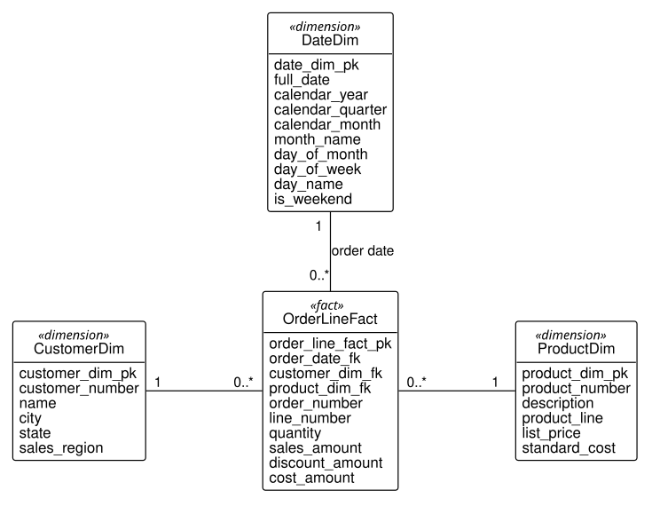

INSERT INTO sales.date_dim
(full_date, calendar_year, calendar_quarter,
calendar_month, month_name, day_of_month,
day_of_week, day_name, is_weekend)
SELECT d::DATE,
EXTRACT(YEAR FROM d)::INTEGER,
EXTRACT(QUARTER FROM d)::INTEGER,
EXTRACT(MONTH FROM d)::INTEGER,
TO_CHAR(d, 'FMMonth'),
EXTRACT(DAY FROM d)::INTEGER,
EXTRACT(ISODOW FROM d)::INTEGER,
TO_CHAR(d, 'FMDay'),
EXTRACT(ISODOW FROM d) IN (6, 7)
FROM generate_series(DATE '2026-01-01',
DATE '2027-12-31',
INTERVAL '1 day') AS d;11 Data Warehousing and Decision Support
NoteLearning objectives
After reading this chapter you should be able to:
- contrast an operational database with a data warehouse, and say what each is designed for
- design a star schema by choosing a business process, a grain, dimensions, and facts
- explain why a warehouse’s dimension tables are denormalized, and when a measure can be summed
- describe an extract, transform, and load process, and load a warehouse incrementally
- keep or overwrite a dimension’s history when it changes
- write roll-up, drill-down, slice, and dice queries with ROLLUP, CUBE, and GROUPING SETS
Every database in this book so far has been designed to run the business: to take an order, ship it, inspect a lot. Such a database answers the questions of the moment well, which order is late, what is in stock, and it answers the questions of a manager poorly. How did sales of hand trucks compare with garden carts, quarter by quarter, in each sales region? The answer is in the operational tables, spread across a year of orders, several schemas, and attributes that no table stores.
This chapter presents the other kind of database, the data warehouse, which is designed to analyze the business. It is built from the operational databases, holds their history, and is shaped for the questions managers and engineers ask of history. HG Industries’ warehouse is the sales schema of stage S, which the chapter designs, loads, and queries.
TipFollowing along
The warehouse is stage S (code/sql/load/through-s.sql), built from the operational data and year of history of stage G. Its script, code/sql/sales/s-star-schema.sql, is the design this chapter arrives at and the load process it reads.
11.1 Operational and analytical processing
This section contrasts the two uses of a database, and says what a data warehouse is.
The work of an operational database is called online transaction processing (OLTP): many short transactions, each reading or changing a few rows, run by the clerks and programs that operate the business, against the current state of the data. The work of analysis is called online analytical processing (OLAP): fewer, longer queries, each reading many rows, usually of history, and summarizing them for someone who must decide something. The two make opposite demands on a design.
Consider the sales manager’s question above, for the last two quarters of the history. The operational tables of stage G can answer it, as chapter 4’s queries did, but the query must join three tables and derive a product line that no table stores, from the pattern of the product number:
WITH line AS (
SELECT EXTRACT(YEAR FROM o.order_date) AS order_year,
EXTRACT(QUARTER FROM o.order_date)
AS order_quarter,
CASE WHEN p.product_number LIKE 'HT-%'
THEN 'Hand trucks'
ELSE 'Garden carts' END AS product_line,
l.quantity * l.unit_price AS amount
FROM distribution.order_line AS l
JOIN distribution.customer_order AS o
ON o.customer_order_pk = l.customer_order_fk
JOIN distribution.product AS p
ON p.product_pk = l.product_fk
WHERE o.order_date >= DATE '2026-10-01'
)
SELECT order_year, order_quarter, product_line,
SUM(amount) AS sales
FROM line
GROUP BY order_year, order_quarter, product_line
ORDER BY order_year, order_quarter, product_line;| order_year | order_quarter | product_line | sales |
|---|---|---|---|
| 2026 | 4 | Garden carts | 213852.52 |
| 2026 | 4 | Hand trucks | 225600.08 |
| 2027 | 1 | Garden carts | 187203.83 |
| 2027 | 1 | Hand trucks | 140291.17 |
The same question, asked of the warehouse, names what it wants directly: the calendar year and quarter from a date dimension, the product line from a product dimension, and the sales amount from a table of facts, with no derivation:
SELECT d.calendar_year, d.calendar_quarter,
p.product_line, SUM(f.sales_amount) AS sales
FROM sales.order_line_fact AS f
JOIN sales.date_dim AS d
ON d.date_dim_pk = f.order_date_fk
JOIN sales.product_dim AS p
ON p.product_dim_pk = f.product_dim_fk
WHERE d.full_date >= DATE '2026-10-01'
GROUP BY d.calendar_year, d.calendar_quarter,
p.product_line
ORDER BY d.calendar_year, d.calendar_quarter,
p.product_line;| calendar_year | calendar_quarter | product_line | sales |
|---|---|---|---|
| 2026 | 4 | Garden carts | 213852.52 |
| 2026 | 4 | Hand trucks | 225600.08 |
| 2027 | 1 | Garden carts | 187203.83 |
| 2027 | 1 | Hand trucks | 140291.17 |
Table 11.1 and Table 11.2 agree to the cent, as they must, since the warehouse was loaded from the same order lines. The difference is in the asking. The warehouse’s query needs no knowledge of how the business numbers its products or dates its orders; what an analyst groups by is a column of a dimension, named for what it means. And a product line decided in one place, when the warehouse is loaded, is the same in every report, rather than re-derived, perhaps differently, in each query. Table 11.3 sets the two kinds of processing side by side.
| Operational processing (OLTP) | Analytical processing (OLAP) | |
|---|---|---|
| Serves | the people and programs that run the business | the people who analyze and plan it |
| Typical work | short transactions touching a few rows | long queries reading many rows |
| Data | current, changed constantly | history, added to in periodic loads |
| Design | normalized, so each fact is stored once (Chapter 7) | dimensional, so each question is easy to ask |
| At HG Industries | distribution, production, quality |
sales |
A data warehouse is a database built for analysis, loaded from the operational databases, that keeps their history. The usual definition, due to W. H. Inmon (Inmon 2005), names four properties, and HG’s sales schema shows each. It is subject-oriented: organized around sales, a subject of the business, rather than around the transactions of taking orders. It is integrated: it combines distribution’s orders with production’s standard costs, which no operational schema holds together. It is time-variant: every fact is tied to a date, so trends can be followed. And it is nonvolatile: rows are added by periodic loads and are not updated by the business’s daily work. A warehouse limited to one department’s subject is often called a data mart; the sales schema, with its one subject, is one.
The two kinds of database are kept apart for practical reasons as well. An analyst’s query that reads a year of orders would compete with the clerks’ transactions for the same tables, and, as Chapter 9 showed, a report that runs while orders are changing may not add up. A warehouse loaded once a night, after the day’s business, gives the analyst a stable copy and leaves the operational database to its work. The next section designs the warehouse.
11.2 Dimensional modeling
This section presents how a warehouse is designed, as a process and then step by step on HG’s sales.
A warehouse is designed as a dimensional model, the approach of Ralph Kimball (Kimball and Ross 2013). Its central idea is to divide what is recorded about a business process into two kinds of data. Facts are the numbers the process produces, which an analyst adds up: a quantity, an amount of money, a time. Dimensions are the contexts in which the facts occurred, which an analyst groups and filters by: when, who, what, where. A dimensional model is designed in four steps:
- Choose the business process. The warehouse describes one activity of the business at a time, such as taking orders or inspecting lots.
- Declare the grain. State what one row of the fact table records: one order line, one order, one product per day. The grain is the most important decision of the design, and every later step must agree with it.
- Identify the dimensions. Ask what describes one fact at that grain: its date, its customer, its product.
- Identify the facts. Ask what numbers are measured at that grain.
The facts go into a fact table, with one row per occurrence at the grain, and each dimension into a dimension table, with one row per member (one per day, per customer, per product). Each fact row refers to one row of each dimension through a foreign key, and a diagram of the tables, the fact table in the middle and the dimensions around it, looks like a star. Such a design is called a star schema.
Example 11.1 (Designing the sales warehouse) HG Industries’ sales manager reviews the business every quarter. The questions come in many forms: sales by product line and region, by month, by customer; how much was given away in discounts; what margin each product earned over its standard cost. Each question is different, and each groups and sums the same underlying activity: customers ordering products.
The request. Design a warehouse in which each of these questions is a single grouping query.
The design. We follow the four steps.
- The business process is order taking: customers placing orders for products, as stage D3 records it.
- The grain is one order line: a quantity of one product, on the order one customer placed on one date. It is the finest grain the operational data holds, and the finest grain is the safest choice, since any coarser summary, by order, by month, can be computed from it, and nothing finer can.
- The dimensions of an order line are its order date, its customer, and its product. Each gets a table of the attributes an analyst groups by: the date’s year, quarter, month, and day of the week; the customer’s city, state, and sales region; the product’s description and product line.
- The facts of an order line are its quantity; its sales amount, the quantity times the unit price; its discount amount, the quantity times the difference between the list price and the unit price; and its cost amount, the quantity times the standard cost from production.
Figure 11.1 draws the result, the star schema of stage S.

Read Figure 11.1 from the center. OrderLineFact, the fact table, holds a row per order line: its three foreign keys, one to each dimension, the order and line numbers, and the four facts. Each of the three dimension tables around it holds a row per date, customer, or product, with a surrogate key and the attributes to group by. The multiplicities are those of Section 5.4: each fact refers to one member of each dimension, and each member may have any number of facts. Listing 11.1 gives the tables as a relational schema.
date_dim (date_dim_pk, full_date, calendar_year,
calendar_quarter, calendar_month, month_name,
day_of_month, day_of_week, day_name, is_weekend)
primary key: date_dim_pk
alternate key: full_date
customer_dim (customer_dim_pk, customer_number, name, city,
state, sales_region)
primary key: customer_dim_pk
alternate key: customer_number
product_dim (product_dim_pk, product_number, description,
product_line, list_price, standard_cost)
primary key: product_dim_pk
alternate key: product_number
order_line_fact (order_line_fact_pk, order_date_fk,
customer_dim_fk, product_dim_fk,
order_number, line_number, quantity,
sales_amount, discount_amount, cost_amount)
primary key: order_line_fact_pk
alternate key: (order_number, line_number)
order_date_fk references date_dim_pk in date_dim,
must not be NULL
customer_dim_fk references customer_dim_pk in
customer_dim, must not be NULL
product_dim_fk references product_dim_pk in product_dim,
must not be NULLThe result. The stage S script creates these tables and loads them, as Section 11.3 reads it. Their sizes are:
SELECT
(SELECT COUNT(*) FROM distribution.order_line)
AS order_lines,
(SELECT COUNT(*) FROM sales.order_line_fact) AS facts,
(SELECT COUNT(*) FROM sales.date_dim) AS dates,
(SELECT COUNT(*) FROM sales.customer_dim)
AS customers,
(SELECT COUNT(*) FROM sales.product_dim) AS products;| order_lines | facts | dates | customers | products |
|---|---|---|---|---|
| 1065 | 1065 | 730 | 30 | 4 |
The check. At the grain of an order line, the fact table must have one row for every order line of the operational data, and Table 11.4 shows 1,065 of each. The dimensions have one row per member: 30 customers and 4 products, as the operational tables hold, and 730 dates, every day of 2026 and 2027, whether or not anyone ordered that day.
Interpretation. Each of the manager’s questions is now a grouping query over the fact table, joined to the dimensions it groups by. Sales by product line and region join product_dim and customer_dim; the margin is SUM(sales_amount) - SUM(cost_amount), grouped by product; discounts given are SUM(discount_amount). None needs a derivation, and all give the same answer for the same question.
Where it breaks. The grain limits the facts. A fact that belongs to a whole order, such as a freight charge, has no place in a table of order lines: stored on every line of the order, it would be added once per line. It belongs in a second fact table, at the grain of an order. In the same way, the design records each order at its order date only; a question about shipping, such as how often orders ship on time, needs the shipment process and a fact table of its own.
A dimension table uses a surrogate key, as almost every table of the book’s database does, and in a warehouse the reason is stronger than elsewhere. A dimension may need several rows for one business object, when the object changes and the warehouse must keep both versions, as Section 11.4 shows; the business identifier, customer_number, then repeats, and only a surrogate key tells the rows apart. The order and line numbers, by contrast, sit in the fact table itself, with no dimension table: an identifier kept on the fact, with nothing to describe it, is called a degenerate dimension. It lets an analyst go back from a fact to the order it came from. The date’s foreign key, finally, is named for its role, order_date_fk, since an order line has other dates, such as its requested ship date, which a later design could add as a second foreign key to the same date dimension.
Notice that the dimension tables are not normalized. In customer_dim, the sales region depends on the state, a transitive dependency of the kind Section 7.4 removes:
SELECT state, sales_region,
COUNT(*) AS customers
FROM sales.customer_dim
GROUP BY state, sales_region
ORDER BY sales_region, state;| state | sales_region | customers |
|---|---|---|
| AR | Fayetteville region | 12 |
| MO | Fayetteville region | 6 |
| KS | Tulsa region | 2 |
| OK | Tulsa region | 7 |
| TX | Tulsa region | 3 |
Each state of Table 11.5 has one region, repeated on every customer row of the state; normalized, the regions would be a table of their own, keyed by state. The repetition is deliberate. Recall from Section 7.6 that denormalization trades the anomalies of repeated facts for simpler reading, and a warehouse is where the trade pays: its rows are written by a load process, not by clerks, so update anomalies cannot arise from daily work, and every query that groups by region saves a join. A dimensional design whose dimensions are normalized into further tables is called a snowflake schema, from the shape of its diagram; it saves little space, since dimensions are small, and costs a join in every query, so the star is the usual choice.
The facts differ in how they may be summed. A fact is additive when summing it over any dimension gives a meaningful total: the sales amount of all customers, of all products, of all days. All four facts of order_line_fact are additive, which is why the design stores amounts, the quantity times a price, rather than prices. A unit price is non-additive: the sum of the unit prices of two order lines means nothing, and an average price must be computed from additive facts, SUM(sales_amount) / SUM(quantity). A fact is semi-additive when it can be summed over some dimensions but not over time: a stock level can be summed over warehouses, giving the stock on hand in all of them, but not over days, since the quantity on hand on Monday and on Tuesday are largely the same carts.
The fact table is by far the largest table of a warehouse, and its size can be estimated before it is built. The combinations of its dimensions’ members give the estimate: about one row for each combination, and in practice a small fraction of them, since not every customer orders every product every day. The combinations are an estimate rather than a bound when the grain is the order line, since one order may list a product on two lines; it is the order number and line number that make each fact unique. For the sales warehouse the combinations of date, customer, and product come to 730 × 30 × 4 = 87,600, and the 1,065 facts of Table 11.4 are about 1.2 percent of that number. A warehouse at a finer grain, or with more dimensions, grows by the product of their sizes, which is the first thing to estimate when you design one. The next section loads the warehouse.
11.3 Extract, transform, and load
This section loads the warehouse from the operational databases, first entirely and then with only what is new.
The process that fills a warehouse is called extract, transform, and load (ETL), after its three steps. Extract reads the data from the operational sources, often several databases or files. Transform turns it into the warehouse’s form: it derives the attributes the dimensions carry, computes the facts at the declared grain, and repairs or rejects what is wrong, as Section 8.5’s staging queries did. Load writes the result into the dimension and fact tables, looking up each dimension’s surrogate key from the business identifier the source carries. Organizations run ETL with dedicated tools and schedulers, but the three steps are the same in every one, and HG’s are a single SQL script, code/sql/sales/s-star-schema.sql.
The dimensions are loaded first, since the facts refer to them. The date dimension is not extracted from anywhere: it is generated, one row for every day of the years the warehouse covers, with PostgreSQL’s generate_series, and its attributes are computed from each date:
generate_series (PostgreSQL’s) returns one row per day between the two dates, and each column is a transformation of the date. Two details prevent errors that are easy to make. The year is EXTRACT(YEAR ...), the calendar year; a widely copied template uses the ISO week-numbering year instead, which puts January 1, 2027, a Friday, in 2026. And TO_CHAR pads month and day names with spaces to a fixed width unless its format begins with FM, which would make 'May' unequal to 'May ' in every later comparison.
The customer and product dimensions are extracted from the operational tables, and transformed on the way: the customer dimension derives each customer’s sales region from the state, and the product dimension derives the product line from the product number and brings in the standard cost from production. Both transformations are CASE expressions, of the kind Section 4.4 wrote.
The facts come last. Each order line is extracted with its order, customer, and product; its measures are computed; and each business identifier, the order date, the customer number, the product number, is joined to its dimension to find the surrogate key the fact table stores. A warehouse is refreshed on a schedule, nightly for example, and each refresh should add only what is new. The fact load therefore carries a condition that skips order lines already loaded, found by the degenerate dimension, the order and line numbers:
INSERT INTO sales.order_line_fact
(order_date_fk, customer_dim_fk, product_dim_fk,
order_number, line_number, quantity,
sales_amount, discount_amount, cost_amount)
SELECT dd.date_dim_pk, cd.customer_dim_pk,
pd.product_dim_pk, o.order_number, l.line_number,
l.quantity,
l.quantity * l.unit_price,
l.quantity * (pd.list_price - l.unit_price),
l.quantity * pd.standard_cost
FROM distribution.order_line AS l
JOIN distribution.customer_order AS o
ON o.customer_order_pk = l.customer_order_fk
JOIN distribution.customer AS c
ON c.customer_pk = o.customer_fk
JOIN distribution.product AS p
ON p.product_pk = l.product_fk
JOIN sales.date_dim AS dd ON dd.full_date = o.order_date
JOIN sales.customer_dim AS cd
ON cd.customer_number = c.customer_number
JOIN sales.product_dim AS pd
ON pd.product_number = p.product_number
WHERE NOT EXISTS (
SELECT 1 FROM sales.order_line_fact AS f
WHERE f.order_number = o.order_number
AND f.line_number = l.line_number);The stage S script’s fact load is the same statement without the last condition, since it loads an empty table. Read the statement in its three steps. The first three joins extract each order line with the rows it belongs to; the three expressions of the select list transform it into the facts of the grain; and the three joins to sales tables load it, replacing each business identifier with a surrogate key. Notice that the joins to the dimensions are inner joins: an order line whose customer is missing from the customer dimension would be dropped without a word, so the dimensions must be loaded, with the same kind of condition, before the facts.
Example 11.2 (Loading a new customer’s first order) On April 1, 2027, the day after the history of stage S ends, Arkansas Valley Supply of Ozark, Arkansas, became customer C-1031 and placed order SO-5615: twelve HT-100 hand trucks at the list price of $89.00 and six GC-400 poly carts at $149.00. The warehouse was last loaded on March 31. The example assumes stage S.
The request. Refresh the warehouse with the new order, loading only what is new, and confirm that loading twice adds nothing.
The design. The sales department’s systems record the customer and the order in the operational tables, as Example 8.2 did:
INSERT INTO distribution.customer
(customer_number, name, city, state)
VALUES ('C-1031', 'Arkansas Valley Supply', 'Ozark', 'AR');
INSERT INTO distribution.customer_order
(order_number, order_date, requested_ship_date,
customer_fk)
VALUES ('SO-5615', DATE '2027-04-01', DATE '2027-04-08',
(SELECT customer_pk FROM distribution.customer
WHERE customer_number = 'C-1031'));
INSERT INTO distribution.order_line
(customer_order_fk, line_number, product_fk,
quantity, unit_price)
SELECT o.customer_order_pk, v.line_number,
p.product_pk, v.quantity, v.unit_price
FROM distribution.customer_order AS o,
(VALUES (1, 'HT-100', 12, 89.00),
(2, 'GC-400', 6, 149.00))
AS v (line_number, product_number, quantity,
unit_price)
JOIN distribution.product AS p
ON p.product_number = v.product_number
WHERE o.order_number = 'SO-5615';The order’s two lines are inserted with one statement: a VALUES list with a name and column names, AS v (line_number, ...), can stand in a FROM clause as a small table, which is joined to product to find each product’s key.
The refresh loads the new customer into the customer dimension, with the same transformation and a condition that skips customers already there, and then runs the fact load above:
INSERT INTO sales.customer_dim
(customer_number, name, city, state, sales_region)
SELECT c.customer_number, c.name, c.city, c.state,
CASE WHEN c.state IN ('OK', 'KS', 'TX')
THEN 'Tulsa region'
ELSE 'Fayetteville region' END
FROM distribution.customer AS c
WHERE NOT EXISTS (
SELECT 1 FROM sales.customer_dim AS cd
WHERE cd.customer_number = c.customer_number);The result. After the refresh, the new facts are:
SELECT f.order_number, f.line_number,
c.customer_number, c.sales_region,
p.product_number, f.sales_amount, f.cost_amount
FROM sales.order_line_fact AS f
JOIN sales.customer_dim AS c
ON c.customer_dim_pk = f.customer_dim_fk
JOIN sales.product_dim AS p
ON p.product_dim_pk = f.product_dim_fk
WHERE f.order_number = 'SO-5615'
ORDER BY f.line_number;| order_number | line_number | customer_number | sales_region | product_number | sales_amount | cost_amount |
|---|---|---|---|---|---|---|
| SO-5615 | 1 | C-1031 | Fayetteville region | HT-100 | 1068.00 | 628.80 |
| SO-5615 | 2 | C-1031 | Fayetteville region | GC-400 | 894.00 | 475.80 |
A second refresh, run at once, finds nothing new:
SELECT COUNT(*) AS facts,
(SELECT COUNT(*) FROM sales.customer_dim)
AS customers
FROM sales.order_line_fact;| facts | customers |
|---|---|
| 1067 | 31 |
The check. The sales amounts are 12 × 89.00 = 1,068.00 and 6 × 149.00 = 894.00, and the cost amounts 12 × 52.40 = 628.80 and 6 × 79.30 = 475.80, from the standard costs the product dimension holds for the HT-100 and the GC-400. The warehouse held 1,065 facts and 30 customers; one refresh adds two facts and one customer, and Table 11.7 shows 1,067 and 31 after two refreshes, so the second added nothing.
Interpretation. The refresh can run every night without anyone deciding what to load: whatever the operational tables hold that the warehouse lacks is loaded, and nothing is loaded twice. A refresh that fails halfway can simply be run again.
Where it breaks. The refresh adds new rows but never changes old ones. If Arkansas Valley Supply later corrected its city in the operational table, the customer dimension would keep the old one, since the condition skips customer numbers already loaded; and an order line changed after it was loaded, a quantity corrected, would not reach the warehouse at all. Changed dimension rows are the subject of the next section; changed facts are usually handled by loading a correcting fact, so that the history of the change is kept.
Two habits make an ETL process trustworthy. Reconcile after every load: count the order lines of the source and the facts of the warehouse, and sum the sales amounts of both, as Table 11.4 and Table 11.1 did; a difference means a lost or doubled row. And make every step safe to run twice, as the conditions above do, so that a failed night can be rerun without cleaning up first.
11.4 Slowly changing dimensions
This section considers what a warehouse should do when a dimension’s member changes: keep its history, or rewrite it.
Dimensions change more slowly than facts, but they change. A customer moves, a product is renamed, a territory is redrawn. A dimension whose members change from time to time is called a slowly changing dimension, and the question each change raises is what the warehouse should say about the past. Every fact refers to a dimension row, and the dimension row says where the customer is. If that row changes, every fact that refers to it moves with it, including facts from before the change.
Suppose that Prairie Garden Center (C-1005), of Fort Smith, Arkansas, moved across the state line to Sallisaw, Oklahoma, on January 1, 2027, and became a customer of the Tulsa region. Before the change, the warehouse reports sales by year and region as:
SELECT d.calendar_year, c.sales_region,
SUM(f.sales_amount) AS sales
FROM sales.order_line_fact AS f
JOIN sales.date_dim AS d
ON d.date_dim_pk = f.order_date_fk
JOIN sales.customer_dim AS c
ON c.customer_dim_pk = f.customer_dim_fk
GROUP BY d.calendar_year, c.sales_region
ORDER BY d.calendar_year, c.sales_region;| calendar_year | sales_region | sales |
|---|---|---|
| 2026 | Fayetteville region | 580451.72 |
| 2026 | Tulsa region | 621080.27 |
| 2027 | Fayetteville region | 165070.05 |
| 2027 | Tulsa region | 162424.95 |
The simplest response, called type 1, overwrites the dimension row with the new values:
UPDATE sales.customer_dim
SET city = 'Sallisaw', state = 'OK',
sales_region = 'Tulsa region'
WHERE customer_number = 'C-1005';SELECT d.calendar_year, c.sales_region,
SUM(f.sales_amount) AS sales
FROM sales.order_line_fact AS f
JOIN sales.date_dim AS d
ON d.date_dim_pk = f.order_date_fk
JOIN sales.customer_dim AS c
ON c.customer_dim_pk = f.customer_dim_fk
GROUP BY d.calendar_year, c.sales_region
ORDER BY d.calendar_year, c.sales_region;| calendar_year | sales_region | sales |
|---|---|---|
| 2026 | Fayetteville region | 554401.72 |
| 2026 | Tulsa region | 647130.27 |
| 2027 | Fayetteville region | 157138.05 |
| 2027 | Tulsa region | 170356.95 |
Compare Table 11.9 with Table 11.8. The 2027 figures are right: the customer’s $7,932.00 of 2027 sales now count in the Tulsa region. But the 2026 figures have changed too. Prairie Garden Center’s $26,050.00 of 2026 sales, made while it was a Fayetteville customer, have moved to Tulsa, and a report of 2026 run today disagrees with the same report run last month. The warehouse has rewritten its own history.
The response that keeps history, called type 2, adds a new row for the customer, with the new values, and keeps the old row for the facts that belong to it. Each row then needs the dates between which it describes the customer, and a flag for the current row, and the customer number is no longer unique in the dimension; which is the reason, noted in Section 11.2, that dimensions use surrogate keys. Stage S’s customer dimension has no such columns, so the demonstration adds them, giving every existing row the whole period and marking it current:
ALTER TABLE sales.customer_dim
ADD COLUMN valid_from DATE NOT NULL
DEFAULT DATE '2026-01-01',
ADD COLUMN valid_to DATE NOT NULL
DEFAULT DATE '9999-12-31',
ADD COLUMN is_current BOOLEAN NOT NULL DEFAULT true,
DROP CONSTRAINT customer_dim_customer_number_key;The move then closes the old row on December 31, 2026, and inserts a new row from January 1, 2027:
UPDATE sales.customer_dim
SET valid_to = DATE '2026-12-31', is_current = false
WHERE customer_number = 'C-1005';
INSERT INTO sales.customer_dim
(customer_number, name, city, state, sales_region,
valid_from)
VALUES ('C-1005', 'Prairie Garden Center', 'Sallisaw',
'OK', 'Tulsa region', DATE '2027-01-01');SELECT customer_dim_pk, customer_number, city,
sales_region, valid_from, valid_to, is_current
FROM sales.customer_dim
WHERE customer_number = 'C-1005'
ORDER BY valid_from;| customer_dim_pk | customer_number | city | sales_region | valid_from | valid_to | is_current |
|---|---|---|---|---|---|---|
| 5 | C-1005 | Fort Smith | Fayetteville region | 2026-01-01 | 2026-12-31 | false |
| 31 | C-1005 | Sallisaw | Tulsa region | 2027-01-01 | 9999-12-31 | true |
A fact must now refer to the row that was valid on its date. The fact load of Section 11.3 finds it by adding the dates to the customer join, ON cd.customer_number = c.customer_number AND o.order_date BETWEEN cd.valid_from AND cd.valid_to, so that orders from 2027 on refer to the new row. Stage S’s facts for 2027 were loaded before the move, so the demonstration repoints them, as a reload would:
UPDATE sales.order_line_fact
SET customer_dim_fk =
(SELECT cd.customer_dim_pk
FROM sales.customer_dim AS cd
JOIN sales.date_dim AS d
ON d.full_date BETWEEN cd.valid_from
AND cd.valid_to
WHERE cd.customer_number = 'C-1005'
AND d.date_dim_pk = order_line_fact.order_date_fk)
WHERE customer_dim_fk IN
(SELECT customer_dim_pk FROM sales.customer_dim
WHERE customer_number = 'C-1005');SELECT d.calendar_year, c.sales_region,
SUM(f.sales_amount) AS sales
FROM sales.order_line_fact AS f
JOIN sales.date_dim AS d
ON d.date_dim_pk = f.order_date_fk
JOIN sales.customer_dim AS c
ON c.customer_dim_pk = f.customer_dim_fk
GROUP BY d.calendar_year, c.sales_region
ORDER BY d.calendar_year, c.sales_region;| calendar_year | sales_region | sales |
|---|---|---|
| 2026 | Fayetteville region | 580451.72 |
| 2026 | Tulsa region | 621080.27 |
| 2027 | Fayetteville region | 157138.05 |
| 2027 | Tulsa region | 170356.95 |
Table 11.11 has the 2026 figures of Table 11.8, unchanged, and the 2027 figures of Table 11.9: each fact is reported in the region its customer was in when the order was placed. A query that wants the customer as it is now, rather than as it was, joins through the customer number to the current row instead: the customer number and is_current together. The customer number alone matches both rows of C-1005 and counts its facts twice.
A third response, type 3, adds a column for the previous value beside the current one, previous_sales_region, so that a report can use either; it keeps one step of history and no more. The choice is made attribute by attribute, and it is a business decision, not a technical one. A misspelled name should be corrected everywhere, so type 1. A sales region decides whose results a sale counts toward, so a region change that should not rewrite last year’s commissions calls for type 2. You should decide, for each attribute of each dimension, which history the business needs before the first load, since a type 1 overwrite cannot be undone later.
11.5 Multidimensional queries
This section writes the queries a warehouse exists for: totals at several levels at once, and the moves an analyst makes between them.
An analyst looks at a warehouse’s facts through its dimensions, and moves among them with a few standard operations, named for a picture of the facts as a cube, one axis per dimension: date, customer, product, with each cell holding the facts where the three meet.
- To roll up is to summarize to a coarser level of a dimension: from quarters to years, from products to product lines.
- To drill down is the reverse: to break a total into the finer levels beneath it, from years to quarters to months.
- To slice is to fix one dimension at one value, as a report of 2026 alone does, which leaves a thinner cube of the other dimensions.
- To dice is to select a sub-cube with conditions on several dimensions at once: hand trucks, in the Tulsa region, in the first quarter of 2027.
A slice and a dice are WHERE conditions on dimension attributes. A roll-up is a GROUP BY on fewer or coarser columns, and a report that shows several levels together, each quarter and each year and the grand total, needs several groupings at once, which SQL writes with ROLLUP, CUBE, and GROUPING SETS.
Let’s evaluate a roll-up by hand first. For the first quarter of 2027, the sales by product line and region are:
SELECT p.product_line, c.sales_region,
SUM(f.sales_amount) AS sales
FROM sales.order_line_fact AS f
JOIN sales.date_dim AS d
ON d.date_dim_pk = f.order_date_fk
JOIN sales.product_dim AS p
ON p.product_dim_pk = f.product_dim_fk
JOIN sales.customer_dim AS c
ON c.customer_dim_pk = f.customer_dim_fk
WHERE d.calendar_year = 2027 AND d.calendar_quarter = 1
GROUP BY p.product_line, c.sales_region
ORDER BY p.product_line, c.sales_region;| product_line | sales_region | sales |
|---|---|---|
| Garden carts | Fayetteville region | 92824.47 |
| Garden carts | Tulsa region | 94379.36 |
| Hand trucks | Fayetteville region | 72245.58 |
| Hand trucks | Tulsa region | 68045.59 |
A report of these cells with subtotals by product line and a grand total needs three groupings: by product line and region (the four cells of Table 11.12), by product line alone, and by nothing, the whole slice. The subtotals are sums of the cells:
| Product line | Region | Grouping | Sales |
|---|---|---|---|
| Garden carts | Fayetteville region | line and region | 92,824.47 |
| Garden carts | Tulsa region | line and region | 94,379.36 |
| Garden carts | (all) | line | 92,824.47 + 94,379.36 = 187,203.83 |
| Hand trucks | Fayetteville region | line and region | 72,245.58 |
| Hand trucks | Tulsa region | line and region | 68,045.59 |
| Hand trucks | (all) | line | 72,245.58 + 68,045.59 = 140,291.17 |
| (all) | (all) | none | 187,203.83 + 140,291.17 = 327,495.00 |
GROUP BY ROLLUP (a, b) asks for these three groupings in one query: by a and b, by a, and by nothing. It produces every row of Table 11.13:
SELECT p.product_line, c.sales_region,
SUM(f.sales_amount) AS sales
FROM sales.order_line_fact AS f
JOIN sales.date_dim AS d
ON d.date_dim_pk = f.order_date_fk
JOIN sales.product_dim AS p
ON p.product_dim_pk = f.product_dim_fk
JOIN sales.customer_dim AS c
ON c.customer_dim_pk = f.customer_dim_fk
WHERE d.calendar_year = 2027 AND d.calendar_quarter = 1
GROUP BY ROLLUP (p.product_line, c.sales_region)
ORDER BY p.product_line, c.sales_region;| product_line | sales_region | sales |
|---|---|---|
| Garden carts | Fayetteville region | 92824.47 |
| Garden carts | Tulsa region | 94379.36 |
| Garden carts | NULL | 187203.83 |
| Hand trucks | Fayetteville region | 72245.58 |
| Hand trucks | Tulsa region | 68045.59 |
| Hand trucks | NULL | 140291.17 |
| NULL | NULL | 327495.00 |
In a subtotal row, a column that was rolled up holds NULL: the region of a product line’s subtotal, and both columns of the grand total. The NULL there means “all”, not a value that is unknown or does not apply, which Section 3.3’s NULL meant. The function GROUPING(column) tells the two apart: it returns 1 when the column was rolled up in that row and 0 otherwise, so a report can label its subtotals.
A roll-up follows a hierarchy, and the order of ROLLUP’s columns must be the hierarchy’s, from coarse to fine. The date dimension’s hierarchy is year, quarter, month, and a quarter means nothing without its year. The history of stage S runs from January 2026 to March 2027, so grouping by quarter alone silently merges two first quarters:
SELECT d.calendar_quarter, SUM(f.sales_amount) AS sales
FROM sales.order_line_fact AS f
JOIN sales.date_dim AS d
ON d.date_dim_pk = f.order_date_fk
GROUP BY d.calendar_quarter
ORDER BY d.calendar_quarter;| calendar_quarter | sales |
|---|---|
| 1 | 349063.00 |
| 2 | 437131.67 |
| 3 | 303379.72 |
| 4 | 439452.60 |
The first row of Table 11.15 adds the first quarters of 2026 and 2027, a number no one asked for. Rolled up along the hierarchy, with GROUPING to label the subtotals, the quarters stay in their years:
SELECT CASE WHEN GROUPING(d.calendar_year) = 1
THEN 'All years'
ELSE d.calendar_year::TEXT END AS year_label,
CASE WHEN GROUPING(d.calendar_quarter) = 1
THEN 'All quarters'
ELSE 'Q' || d.calendar_quarter END
AS quarter_label,
SUM(f.sales_amount) AS sales
FROM sales.order_line_fact AS f
JOIN sales.date_dim AS d
ON d.date_dim_pk = f.order_date_fk
GROUP BY ROLLUP (d.calendar_year, d.calendar_quarter)
ORDER BY d.calendar_year, d.calendar_quarter;| year_label | quarter_label | sales |
|---|---|---|
| 2026 | Q1 | 21568.00 |
| 2026 | Q2 | 437131.67 |
| 2026 | Q3 | 303379.72 |
| 2026 | Q4 | 439452.60 |
| 2026 | All quarters | 1201531.99 |
| 2027 | Q1 | 327495.00 |
| 2027 | All quarters | 327495.00 |
| All years | All quarters | 1529026.99 |
Each year of Table 11.16 is followed by its subtotal, and the last row is the grand total, $1,529,026.99. The first row of Table 11.15, 349,063.00, is the first quarter of 2026, 21,568.00, plus the first quarter of 2027, 327,495.00; the history of stage G begins in April 2026, so the first quarter of 2026 holds only the twelve starting orders of stage D5. To drill down from Table 11.16 to months, add d.calendar_month as the third column of the ROLLUP.
ROLLUP produces the groupings of one hierarchy. When the columns are independent dimensions, a report may want every combination of them: the cells, the subtotals by each dimension, and the total. GROUP BY CUBE (a, b) produces all of them, the four groupings (a, b), (a), (b), and (). For 2026, a slice of the cube, by product line and region:
SELECT CASE WHEN GROUPING(p.product_line) = 1
THEN '(all)' ELSE p.product_line END
AS product_line,
CASE WHEN GROUPING(c.sales_region) = 1
THEN '(all)' ELSE c.sales_region END
AS sales_region,
SUM(f.sales_amount) AS sales
FROM sales.order_line_fact AS f
JOIN sales.date_dim AS d
ON d.date_dim_pk = f.order_date_fk
JOIN sales.product_dim AS p
ON p.product_dim_pk = f.product_dim_fk
JOIN sales.customer_dim AS c
ON c.customer_dim_pk = f.customer_dim_fk
WHERE d.calendar_year = 2026
GROUP BY CUBE (p.product_line, c.sales_region)
ORDER BY GROUPING(p.product_line),
GROUPING(c.sales_region),
p.product_line, c.sales_region;| product_line | sales_region | sales |
|---|---|---|
| Garden carts | Fayetteville region | 253811.04 |
| Garden carts | Tulsa region | 270799.22 |
| Hand trucks | Fayetteville region | 326640.68 |
| Hand trucks | Tulsa region | 350281.05 |
| Garden carts | (all) | 524610.26 |
| Hand trucks | (all) | 676921.73 |
| (all) | Fayetteville region | 580451.72 |
| (all) | Tulsa region | 621080.27 |
| (all) | (all) | 1201531.99 |
The nine rows of Table 11.17 are the four cells, two subtotals by product line, two by region, and the total. GROUPING SETS names the groupings wanted explicitly, when neither ROLLUP nor CUBE gives the groupings wanted: GROUP BY GROUPING SETS ((p.product_line), (c.sales_region)) gives the two sets of subtotals without the cells or the total. In fact ROLLUP and CUBE are shorthand for grouping sets: ROLLUP (a, b) is GROUPING SETS ((a, b), (a), ()). All three are standard SQL, and PostgreSQL supports them. The pivot of Section 4.4, with FILTER, lays the same numbers out as a cross tab, one dimension across the columns.
A report that many people run, a monthly summary by product, reads the whole fact table each time. A warehouse often stores such a summary instead, as a table of its own, refreshed with each load. In PostgreSQL, a materialized view (Section 9.1) does this: it stores its query’s result, and REFRESH MATERIALIZED VIEW recomputes it after the nightly load:
CREATE MATERIALIZED VIEW sales.monthly_product_sales AS
SELECT d.calendar_year, d.calendar_month,
p.product_number, SUM(f.quantity) AS quantity,
SUM(f.sales_amount) AS sales
FROM sales.order_line_fact AS f
JOIN sales.date_dim AS d
ON d.date_dim_pk = f.order_date_fk
JOIN sales.product_dim AS p
ON p.product_dim_pk = f.product_dim_fk
GROUP BY d.calendar_year, d.calendar_month,
p.product_number;SELECT calendar_year, calendar_month, product_number,
quantity, sales
FROM sales.monthly_product_sales
WHERE calendar_year = 2027 AND calendar_month = 3
ORDER BY product_number;| calendar_year | calendar_month | product_number | quantity | sales |
|---|---|---|---|---|
| 2027 | 3 | GC-300 | 421 | 48775.72 |
| 2027 | 3 | GC-400 | 505 | 73026.39 |
| 2027 | 3 | HT-100 | 237 | 20695.17 |
| 2027 | 3 | HT-200 | 228 | 30994.22 |
The summary has one row per month and product, 15 months of four products at most, where the fact table has 1,065 rows; a report of any month reads a few rows. Because the summary holds sums, which are additive, it can be rolled up further, to quarters or years, without returning to the facts; a summary of averages could not.
11.6 Summary
Operational databases run the business; a data warehouse analyzes it. Online transaction processing is many short transactions on current data; online analytical processing is long queries over history. A warehouse is loaded from the operational databases, keeps their history, and is subject-oriented, integrated, time-variant, and nonvolatile.
A dimensional model divides a business process into facts and dimensions. It is designed in four steps: choose the business process, declare the grain, identify the dimensions, and identify the facts. The facts go into a fact table at the declared grain, the dimensions into tables around it, and the result is a star schema.
A warehouse’s dimensions are denormalized, and its facts should be additive. Repeated attributes in a dimension save joins and cannot drift, since a load process writes them. Additive facts can be summed over any dimension; non-additive ones must be computed from additive ones, and semi-additive ones cannot be summed over time.
Extract, transform, and load fills the warehouse, and a refresh loads only what is new. Extract reads the sources, transform derives attributes and computes facts at the grain, and load replaces business identifiers with surrogate keys, dimensions before facts. A condition that skips rows already loaded makes each step safe to run twice; reconcile counts and sums after every load.
A slowly changing dimension either rewrites history or keeps it. Type 1 overwrites the dimension row, so old facts move with the change; type 2 adds a row with the dates it is valid, so each fact keeps the member as it was; type 3 keeps one previous value in a column. The choice is the business’s, made attribute by attribute before the first load.
ROLLUP, CUBE, and GROUPING SETS compute several levels of totals in one query. Roll-up and drill-down move along a dimension’s hierarchy, and slice and dice select part of the cube. ROLLUP follows one hierarchy from coarse to fine, CUBE takes every combination, GROUPING SETS names the groupings, and GROUPING() tells a subtotal’s NULL from a missing value. Keep a hierarchy’s levels together, a quarter with its year.
11.7 Exercises
Exercise 11.1 Match each term on the left with the phrase on the right that defines it.
| Term | Definition |
|---|---|
| a. grain | 1. an identifier kept on a fact, with no dimension table |
| b. fact table | 2. what one row of the fact table records |
| c. dimension table | 3. a dimensional design whose dimensions are normalized |
| d. degenerate dimension | 4. the rows of measurements at the declared grain |
| e. snowflake schema | 5. the members of one context of the facts, with their attributes |
Exercise 11.2 Mark each statement true or false, and correct each false one.
- A data warehouse should be normalized to third normal form, like the operational databases it is loaded from.
- The grain of
order_line_factcould be changed to one row per order without losing any question the warehouse can answer. SUM(quantity_on_hand)over all days of a month gives the stock on hand during the month.- The fact table of a star schema is usually much larger than any of its dimension tables.
- A dimension table’s business identifier, such as
customer_number, is always unique within the table.
Exercise 11.3 Classify each measure as additive, semi-additive, or non-additive, and say how you would report it for a month of the history.
- The quantity ordered on an order line.
- The unit price of an order line.
- The quantity on hand of a product in a warehouse, recorded daily.
- The discount amount of an order line.
- A product’s margin as a percentage of its sales amount.
Exercise 11.4 HG Industries’ quality department wants a warehouse of its inspections (stage Q), to analyze how its parts measure over time, by part, characteristic, inspector, and lot.
- Apply the four steps of dimensional design: name the business process, declare the grain, and list the dimensions and the facts.
- Draw the star schema in the manner of Figure 11.1, with the columns of each table.
- Is the measured value an additive fact? What fact would you add so that the fraction of measurements out of specification can be computed with
SUM? - Estimate the largest number of rows the fact table could have for one year, if the plant inspected one lot of each part that has characteristics on each of 250 working days, and compare it with the rows stage Q actually holds.
Exercise 11.5 For each change below to HG Industries’ customer dimension, say whether you would handle it as type 1 or type 2, and give the business reason.
- Riverside Hardware’s name was loaded misspelled, and is corrected.
- Lakeside Distributors moves from Springfield, Missouri, to Tulsa, Oklahoma.
- The sales department splits the Tulsa region into a Tulsa region and a Dallas region, and assigns the Texas customers to Dallas from July 1.
- A customer’s telephone number, which no report groups by, changes.
Exercise 11.6 In Example 11.2, suppose that the nightly refresh ran the fact load before the customer load.
- What would the fact load have done with the two lines of SO-5615, and would anything have reported it?
- What would the next night’s refresh do, if it ran in the right order?
- What reconciliation of Section 11.3 would have caught the problem on the first night?
Exercise 11.7 Using stage S, write one query that reports, for 2026, the sales amount and the margin (sales amount less cost amount) by sales region and product line, with a subtotal for each region and a grand total, and with each subtotal row labeled (all) in place of its NULL. Check the grand total of the sales amount against Table 11.8.
Exercise 11.8 At stage S, the query below groups the facts by CUBE over three dimension attributes.
SELECT p.product_line, c.sales_region, d.calendar_year,
SUM(f.sales_amount)
FROM sales.order_line_fact AS f
JOIN sales.date_dim AS d
ON d.date_dim_pk = f.order_date_fk
JOIN sales.product_dim AS p
ON p.product_dim_pk = f.product_dim_fk
JOIN sales.customer_dim AS c
ON c.customer_dim_pk = f.customer_dim_fk
GROUP BY CUBE (p.product_line, c.sales_region,
d.calendar_year);- How many groupings does
CUBEof three columns produce? Name them. - Predict the number of rows the query returns, given two product lines, two regions, and two years with sales, and assuming every combination has sales.
- Run the query and compare its row count with your prediction.
Exercise 11.9 Using the Chinook database of Section C.11, loaded with the book’s loader (Section A.6):
- Name the grain, the dimensions, and the facts of a star schema for the store’s sales, following the four steps of Section 11.2.
- Without building it, compute from the operational tables the sales of 2024 and 2025 by year and media type, with a subtotal for each year and a grand total, using
ROLLUP(Section 11.5).